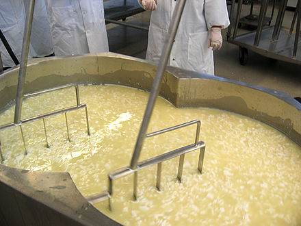

How Cheese is Typically Made
Home |
Types of Cheese |
Uses for Cheeses
Disclaimer:
Not all cheeses are equal this is just how most cheeses are made and the most common ingridents used
Typical Ingredients
- Milk
- Rennet
- Calcium Chloride
- Spices
- Herbs
Process
- Milk is extracted from the cow via milking
- The milk is then pasturized to remove bacteria
- The pasturized milk is put into a cheese vat
- The cheese vat is set to an optimal temerature for bacteria culture to grow
- Rennet, an enzyme, is added turning the milk into a gel like substance
- After the curd has fermented, it is cut into pieces and heated
- Heating the curd allows it to seperate from the whey
- The whey is then drained out of the cheese vat and only curd is left
- Curd strips are then layered and flipped to continue the fermentation process
- This process is known as cheddaring
- At this point the process differs depending on what cheese is being made
- Cheeses like Mozarella get shaped into loaves and placed into a salt water solution
- Cheeses like cheddar are made by mixing the curds with salt
- All cheeses are then shaped and aged for varying amounts of time

Additional Resource
If you are still curious about how cheese is made this video will help
| ©2018 AIT | APCSP Contact us at realmail@gmail.com
|